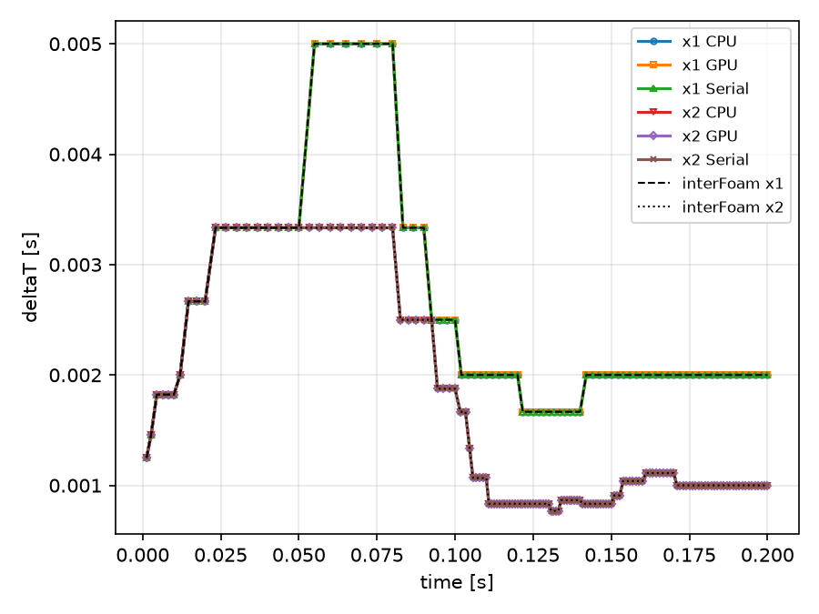
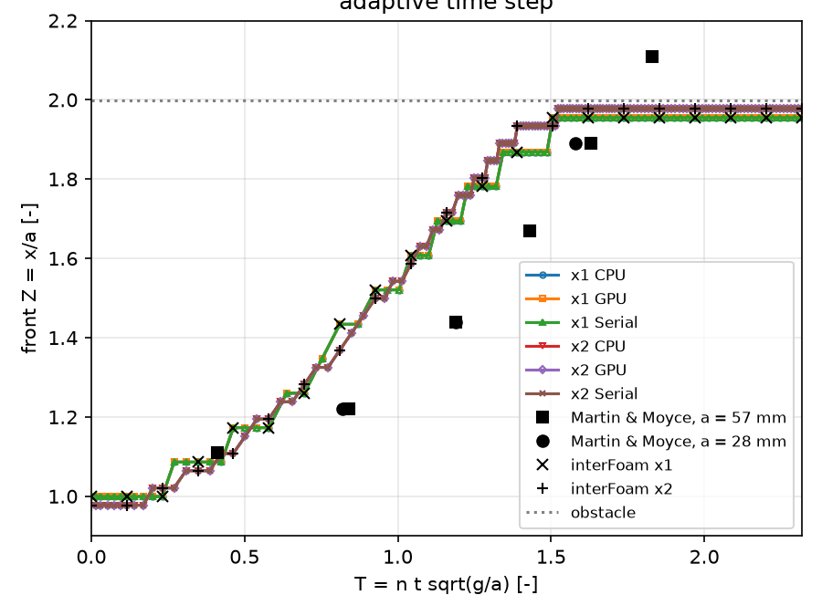
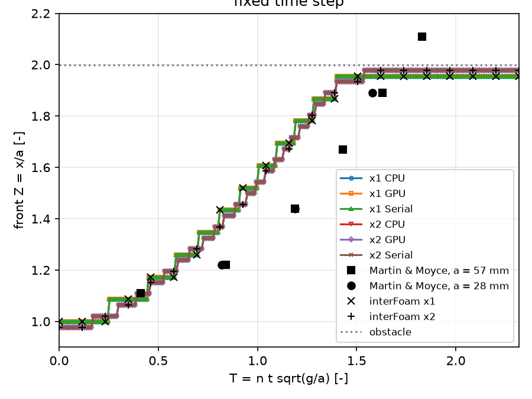

freeSurface/damBreak¶
Why and what is tested¶
A water column that collapses under gravity puts NeoFOAM’s full two-phase solver
incompressibleVoFNeoN (MULES advection, gravity across a density ratio of 1000, the
PIMPLE pressure-velocity coupling) through a fast free-surface flow. The speed of the
surge front along the floor is the classic measurable of this flow: Martin & Moyce (1952)
recorded it for collapsing columns twice as high as wide, the shape of the OpenFOAM
damBreak tutorial’s column. The benchmark reproduces NeoFOAM’s tests
test_damBreak_comparison (fixed time step) and test_damBreak_adaptive_time_step
(interFoam’s adaptive time step) and shows the front against the experiment and against
native interFoam on the same meshes.
Case¶
OpenFOAM’s damBreak tutorial, 0.584 m × 0.584 m (x-y, one cell in z) in five blocks:
a water column a = 0.1461 m wide and 0.292 m high (n² = 2) against the left wall, an
obstacle 0.024 m wide and 0.048 m high at x = 0.292 m on the floor, walls on three sides
and an open top (atmosphere). Water and air (ρ = 1000/1, ν = 1e-6/1.48e-5), g =
9.81 m/s², no surface tension (σ = 0), MULES, to t = 0.2 s. The column is set by
setAlphaField with system/setAlphaField.py (the cells whose centre is in the
box, as the tutorial’s setFieldsDict; NeoFOAM’s setFields fails on the
atmosphere’s inletOutlet before the first flux exists). Both solvers
use a diagonal preconditioner for p_rgh and diagonal PBiCGStab for the MULES
corrector, as NeoFOAM’s tests (NeoN’s DIC factorisation fails on this matrix).
The front is the largest x of the cell centres with α > 0.5 in the bottom cells (y ≤
0.01 m; this repository’s phaseExtent node), written every time step and shown as
Martin & Moyce’s Z = x/a over T = n t (g/a)^½. On a mesh it moves in steps of one cell
width (ΔZ = 0.087 on x1). The comparison with the experiment holds until the front
reaches the obstacle at Z = 2.0.
Reference data¶
reference/martin_moyce.csv: Martin, J. C. & Moyce, W. J. (1952), Part IV. An experimental study of the collapse of liquid columns on a rigid horizontal plane, Phil. Trans. R. Soc. A 244, 312–324, Table 2 (rectangular section, n² = 2): the mean T at each Z of the runs with a = 1⅛ in. (28.6 mm) and a = 2¼ in. (57.2 mm). The paper shifts the time of every run so that T = 1.19 at Z = 1.44, as the instant of release is uncertain; the simulation’s T counts from the release. Five points lie before the obstacle (Z = 1.11 … 1.89).reference/interfoam_front.csv,interfoam_time_steps.csv: interFoam of OpenFOAM-v2406 on this case per mesh and time step: the front at the field write times (every 0.01 s, the same definition) and the adaptive time steps.
Parameter changes¶
Parameter |
Meaning |
Values |
Smoke run |
|---|---|---|---|
Mesh |
cells per direction ( |
23 × 8, 46 × 16 |
23 × 8 |
Time step ( |
fixed |
False, True |
True |
Executor |
NeoN backend ( |
Serial, CPU (OpenMP), GPU (CUDA) |
Serial |
12 cases (2 × 2 × 3); the smoke run (--smoke) has 1. The raw payloads are in benchmarks/freeSurface/damBreak/benchmark.yaml.
Results¶

deltaT¶

front_adaptive¶

front_fixed¶
Time step |
Mesh |
steps |
T at Z = 1.89 |
water volume change |
|---|---|---|---|---|
adaptive |
x1 |
84 |
1.506 |
-2.428e-07 |
adaptive |
x2 |
142 |
1.332 |
-6.712e-07 |
fixed |
x1 |
200 |
1.402 |
-4.831e-07 |
fixed |
x2 |
200 |
1.344 |
-6.939e-07 |
Rows: the Serial executor. CPU and GPU agree with it to 1e-08 (relative, in these columns; round-off values below 1e-10 left out).
All 12 cases and columns: results.csv, changes against the previous snapshot: changes.json.
front_fixed,front_adaptive: NeoFOAM’s front is in the same cell as interFoam’s (crosses) at every write time, on both meshes, both time steps and every executor; the executors agree to round-off. It reaches Z = 1.89 at T = 1.40 (x1) and 1.34 (x2) with the fixed step, 1.51 and 1.33 with the adaptive one, and stops in the last bottom cell before the obstacle (Z = 1.96, 1.98).Against Martin & Moyce the front runs ahead: it reaches Z = 1.44 at T = 0.89 … 0.93, the experiment at 1.19; Z = 1.89 at T = 1.33 … 1.51, the experiment at 1.58 (a = 28 mm) and 1.63 (57 mm). Much of the lead is the experiment’s time origin (each run’s T is shifted to 1.19 at Z = 1.44, as the release is not instantaneous). The mean speed over Z = 1.44 … 1.89, ΔZ/ΔT, is 0.78 … 1.0 in the simulations (one cell is ΔZ = 0.087 on
x1) and 1.15 and 1.02 in the experiment.deltaT: the adaptive time steps are interFoam’s, step for step (84 steps onx1, 142 onx2), to the 8 digits the logs print.The water volume changes by less than 1e-6 (MULES with
cAlpha1 and the open top).
Against the previous snapshot: 0 flagged (a metric off by more than a factor 2, a case missing or NaN), 12 new cases.
case |
column |
change |
snapshot |
run |
|---|---|---|---|---|
adaptive_x1_CPU |
new |
|||
adaptive_x2_CPU |
new |
|||
adaptive_x1_GPU |
new |
|||
adaptive_x2_GPU |
new |
|||
adaptive_x1_Serial |
new |
|||
adaptive_x2_Serial |
new |
|||
fixed_x1_CPU |
new |
|||
fixed_x2_CPU |
new |
|||
fixed_x1_GPU |
new |
|||
fixed_x2_GPU |
new |
|||
fixed_x1_Serial |
new |
|||
fixed_x2_Serial |
new |